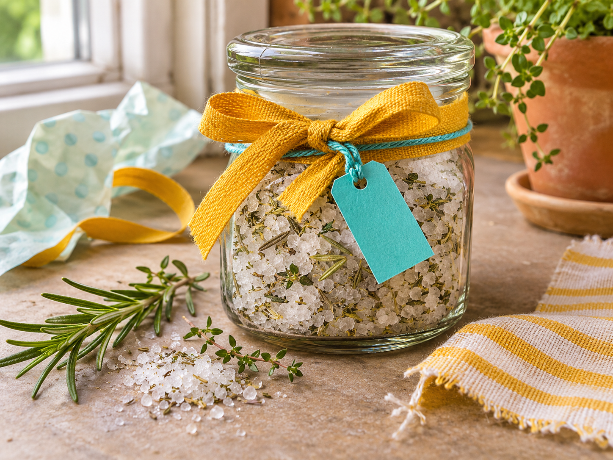

Krydderurtesalt
Lav krydderurtesalt med urter fra haven eller altanen. Fyld det på et lille genbrugsglas, og sæt et kort på med forslag til, hvad saltet passer til.
Guide til krydderurtesaltKender du det? Du vil gerne give noget, der føles gennemtænkt og personligt – til naboen, kollegaen, postbuddet, dit barns lærer – men du har ikke tid! Heldigvis har jeg gode nyheder til netop dig! Dert tager nærmest længere tid at finde gaverne i butikkerne, stå i lange kører ved kassen og måske er transporten også tidskrævende oveni
Pynt glasset med en stofrest eller et bånd, og skriv en lille hilsen på et kort af brugt papir.

Lav krydderurtesalt med urter fra haven eller altanen. Fyld det på et lille genbrugsglas, og sæt et kort på med forslag til, hvad saltet passer til.
Guide til krydderurtesalt
Lav en appelsinlikør med appelsinskal, vanilje og vodka fra barskabet. Hæld den på en genbrugsflaske, og bind et bånd om halsen.
Guide til appelsinlikør
Fold små frøkuverter af brugt papir, og fyld dem med frø fra dine yndlingsblomster. Skriv blomstens navn og et lille såtip på hver kuvert.
Guide til frøkuverter